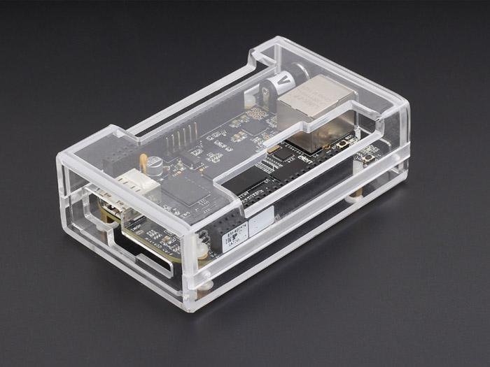
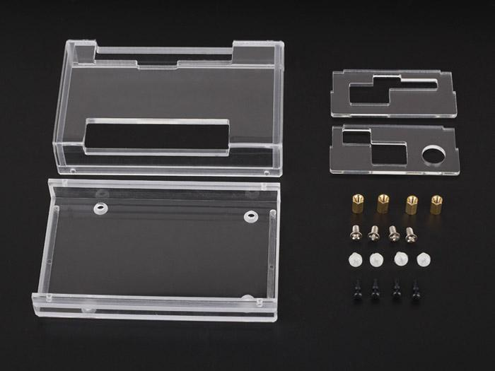
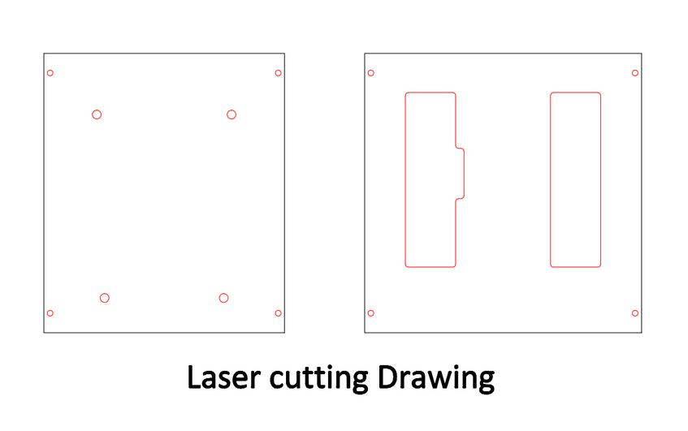
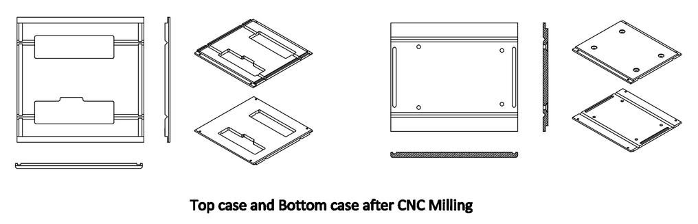
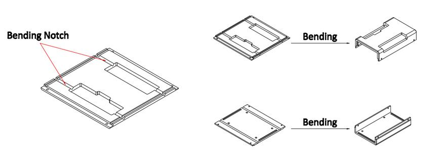
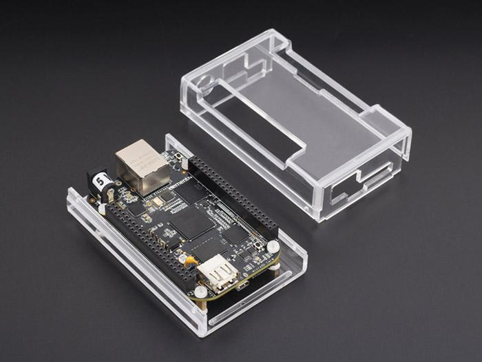
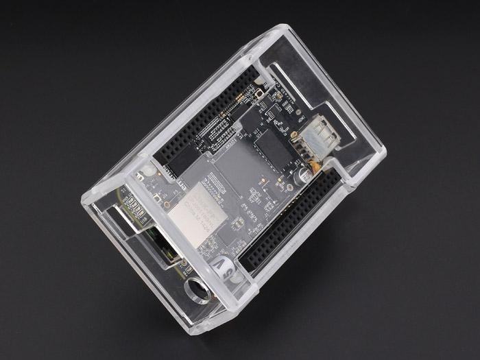
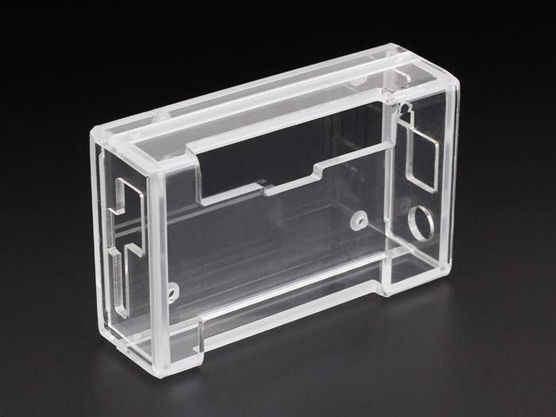

The acrylic case is used for Beaglebone, like the Raspberry PI B+ case.It’s made of acrylic sheet. manufacture by laser cutting, CNC milling, and hot bending. almost all handmade, Looks very compact and beautiful, Only 4 pieces sheets in total, so easy to assembled. It's strong enought, not easy break like other 6 acrylic sheets case. In the box rounded corners and beveled edges .you will feel very comfortable when you hold it.
Model:[113070001]


It's different from the others case just like 6-acrylic sheets laser cutting case and injection model. Although it's cheap and fast made, But maybe some people think it no personality. Now,there is a case for beaglebone is out of the common, it's designed by seeedstudio engineer. It's not made by large scale way just like injection model and simple laser cutting. Made the case requires 3 kinds of production process——laser cutting ,CNC milling and hot bending. all the processes are suitable for small scale project.
The first process——Laser Cutting
We should cutting it by laser cutting machine, It's cheap and fast.

The second process——CNC milling
After laser cutting you we should cutting some structure let it easy assembly and bending.

The third process——hot bending
The last process is hot bending, We can use the heater heating the acrylic notch which is machined by CNC milling machine.

After you know the 3 processes maybe you can understand why we said it's out of the common.
 


Assembly diagram is as follows:
| Part | Package | Qty |
|---|---|---|
| Top Case | 4mm Thickness | 1 |
| Bottom Case | 4mm Thickness | 1 |
| Side Sheet 1 | 2.5mm Thickness | 1 |
| Side Sheet 2 | 2.5mm Thickness | 1 |
| Metal Screw | M3*4 | 4 |
| Nylon Screw | M3*6 | 4 |
| Screw Column | M3*8 | 4 |
| Nylon Rivet | R2048 | 4 |
| Silicone Cushion | Ø10X3 | 4 |